Hub | 부교재 7장: 심미적 사용성 효과 | 맛집 인테리어 스토리
여러분, 같은 파스타인데 한쪽은 고급 레스토랑, 한쪽은 허름한 분식집에서 나왔습니다. 252명에게 물었더니, 고급 레스토랑 파스타가 "더 맛있다"고 답한 비율이 압도적이었습니다.
기능(맛)은 똑같은데, 왜 예쁜 곳의 음식이 더 맛있게 느껴질까요? 이건 미각의 문제일까요, 뇌의 착각일까요?
오늘은 '맛집 인테리어'라는 비유로 이 현상을 하나씩 풀어보겠습니다.
"여러분도 인스타 감성 카페 가면 커피가 더 맛있게 느껴진 적 있지 않나요? 오늘 이야기할 '심미적 사용성 효과'가 바로 그 현상입니다. 예쁜 식당 비유로 15장의 슬라이드를 하나의 이야기로 따라가 보겠습니다."
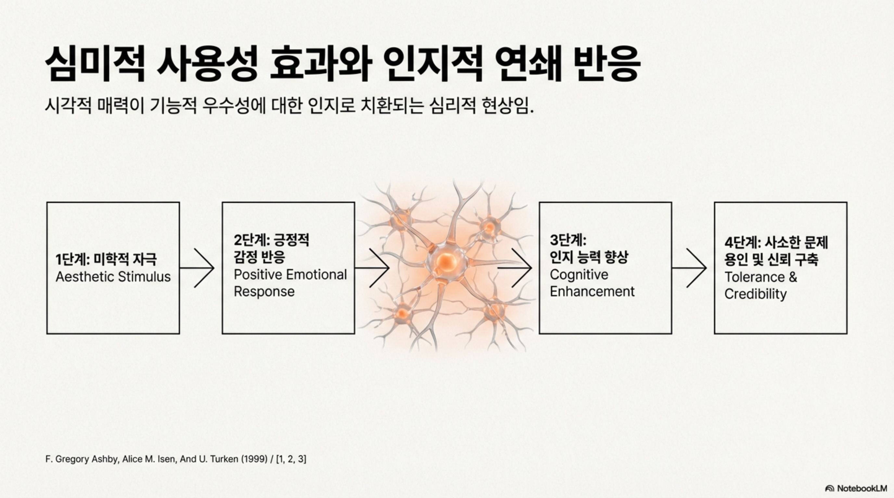
왼쪽에서 오른쪽으로 4단계 연쇄반응: 1단계 미학적 자극(인테리어) → 2단계 긍정적 감정(기분 좋음) → 3단계 인지 능력 향상(맛도 좋게 느낌) → 4단계 문제 용인(불만도 참음). 가운데 뉴런 이미지는 뇌의 감정 회로가 작동한다는 의미입니다.
화살표를 순서대로 가리키며 "이 4단계가 자동으로 연쇄적으로 일어납니다. 우리가 의식하기도 전에요." 특히 3→4단계 사이를 가리키며 "여기가 위험합니다. 진짜 문제를 못 찾게 되거든요."
이 효과가 정말 존재하는 걸까요? 1995년, 누군가가 실험으로 증명했습니다.
"예쁜 카페에 가면 커피가 더 맛있죠? 이게 바로 심미적 사용성 효과입니다. 예쁜 디자인이 뇌에 긍정적 감정을 일으키고, 그 감정이 성능 평가까지 왜곡시킵니다. 4단계 도미노처럼 자동으로 일어나요."
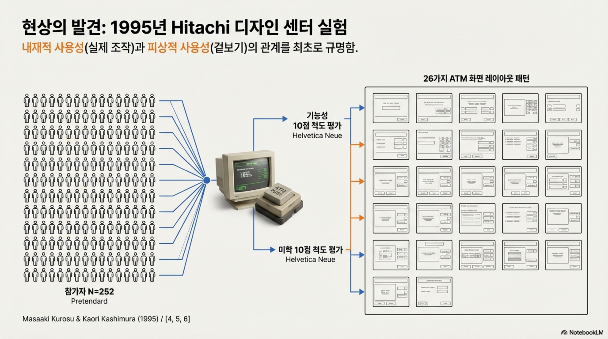
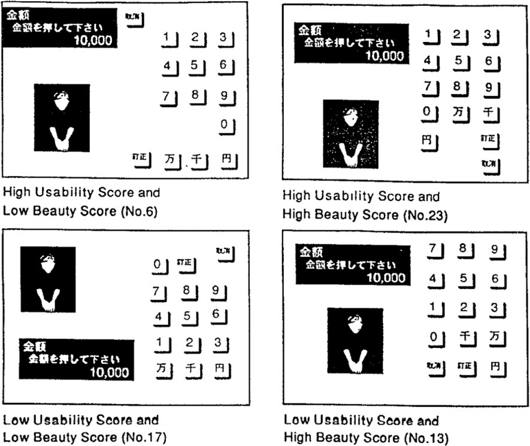
왼쪽: 252명의 참가자. 중앙: ATM 기기. 오른쪽: 26가지 화면 레이아웃. 파란 화살표=기능성 10점 척도 평가, 주황 화살표=미학 10점 척도 평가. 기능은 전부 같은데 디자인만 달라요.
오른쪽 26개 레이아웃 격자를 가리키며 "기능은 전부 동일합니다. 버튼 위치만 다를 뿐이에요." 그리고 파란/주황 화살표를 번갈아 가리키며 "사람들에게 두 가지를 물었습니다. 기능성과 미학."
252명이 26가지 레이아웃을 평가했을 때, 미학과 사용성 사이에 어떤 관계가 나왔을까요?
"비유하면 이렇습니다. 26개 식당이 있는데, 메뉴와 요리사는 전부 같아요. 다른 건 인테리어뿐이에요. 252명한테 '어디가 맛있어 보여?'라고 물었더니, 사람들은 인테리어 예쁜 곳을 맛있는 곳으로 골랐습니다."
쿠로스와 카시무라의 1995년 원본 실험 설계의 통계적 방법론에 대해서는 교수님께서 보충해주실 겁니다.
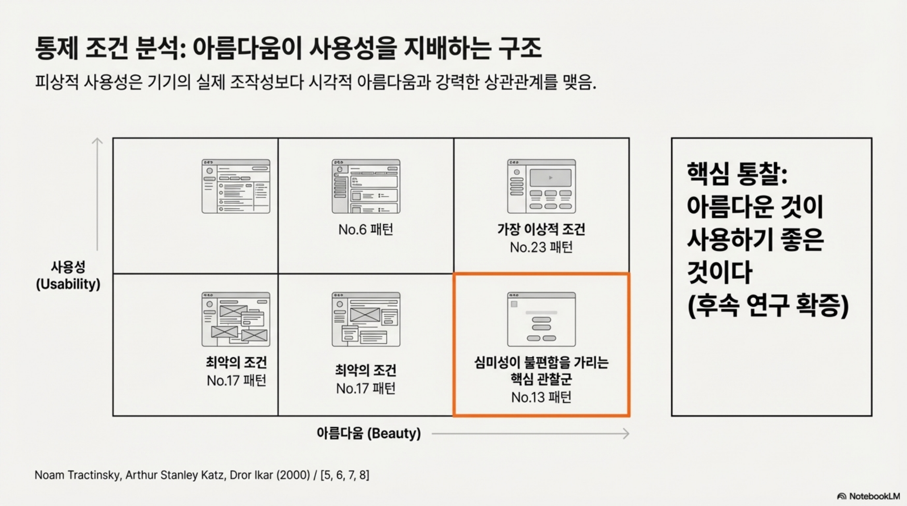
X축 = 아름다움(Beauty), Y축 = 사용성(Usability). 6개 칸의 매트릭스. 오른쪽 아래 주황 테두리 칸이 가장 중요합니다: 아름답지만 사용성이 낮은데도 사람들은 "쓰기 편하다"고 착각합니다. 오른쪽의 핵심 통찰: "아름다운 것이 사용하기 좋은 것이다"
주황 테두리(No.13)를 가리키며 "여기가 이 실험의 핵심입니다. 실제로 쓰기 불편한데, 예뻐서 편하다고 착각하는 영역이에요." 그리고 오른쪽 검정 박스 "핵심 통찰"을 가리키며 결론을 읽어줍니다.
눈으로 봤으니 이제 숫자로 확인해볼까요? 아름다움과 사용성의 상관관계가 정확히 어느 정도일까요?
"식당으로 치면 No.13은 인테리어가 멋진데 음식은 평범한 곳이에요. 그런데 손님들은 '여기 맛있다'고 평가합니다. 이게 바로 심미성이 불편함을 가려버리는 핵심 현상입니다."
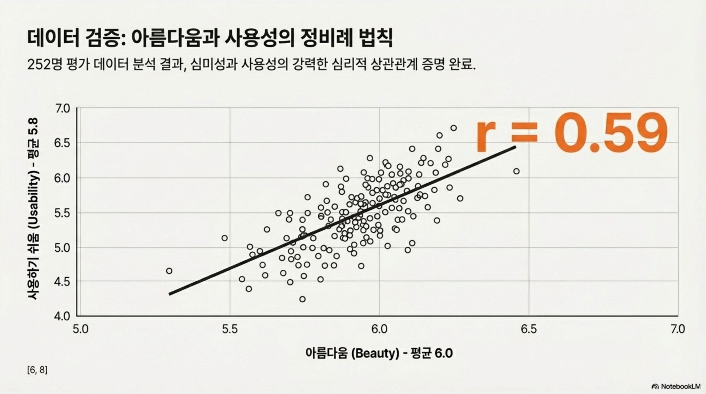
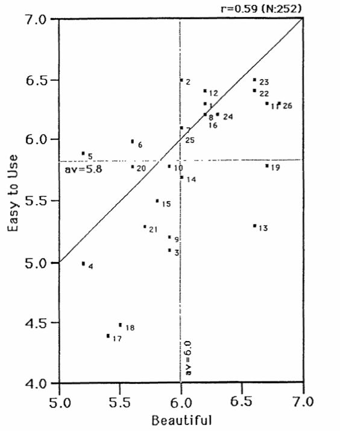
X축 = 아름다움(Beauty) 평균 6.0점, Y축 = 사용하기 쉬움(Usability) 평균 5.8점. 각 점 = 252명이 평가한 26개 ATM 레이아웃 중 하나의 평균 점수. 검은 직선 = 회귀선. 오른쪽 위로 올라가는 기울기 = 아름다울수록 쓰기 편하다고 느낌. 주황색 r=0.59 = 강한 양의 상관관계.
주황색 "r = 0.59"를 가리키며 "이 숫자가 핵심입니다. 1에 가까울수록 완벽한 비례인데, 0.59는 심리학에서 꽤 강한 상관입니다." 회귀선을 따라 손을 움직이며 "아름다움이 올라가면 사용성 평가도 같이 올라갑니다."
자, 현상은 확인됐습니다. 그런데 도대체 왜 우리 뇌는 이런 착각을 할까요? 뇌의 구조를 들여다봅시다.
"252명의 데이터가 깔끔하게 우상향합니다. 예쁜 식당일수록 맛있다고 느끼는 거예요. 0.59라는 상관계수는 '우연이 아니다, 진짜 관계가 있다'는 뜻입니다. 그렇다면 왜 뇌가 이런 착각을 할까요?"
상관계수의 통계적 유의성과 r² 설명력에 대해서는 교수님께서 보충해주실 겁니다.
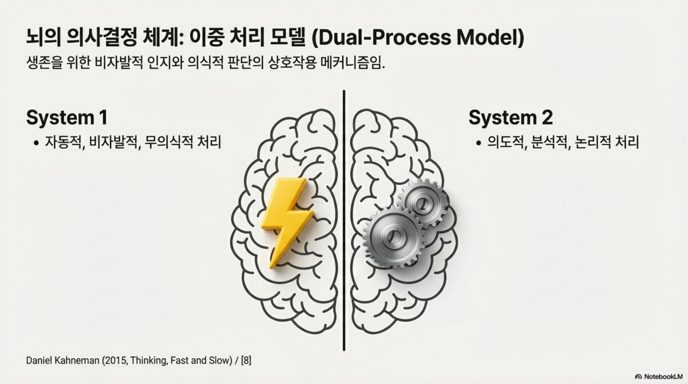
왼쪽 번개를 가리키며 "System 1은 번개처럼 빠릅니다. 느끼는 뇌." 오른쪽 톱니바퀴를 가리키며 "System 2는 분석하는 뇌. 느리지만 정확해요." 가운데 세로선을 가리키며 "이 두 시스템이 하나의 뇌에 공존합니다."
그렇다면 System 1이 구체적으로 어떻게 작동해서 0.05초 만에 판단을 내릴까요?
"식당 문을 열고 들어가면 우리 뇌는 두 가지 모드로 반응합니다. 하나는 번개 — 직감으로 '여기 좋다!' 하고 0.05초 만에 판단하는 System 1. 다른 하나는 톱니바퀴 — 메뉴판을 하나하나 읽고 가격을 따지는 System 2. 심미적 사용성 효과의 원인은 바로 이 System 1입니다."
카너먼의 이중 처리 모델과 행동경제학의 관계는 교수님께서 보충해주실 겁니다.
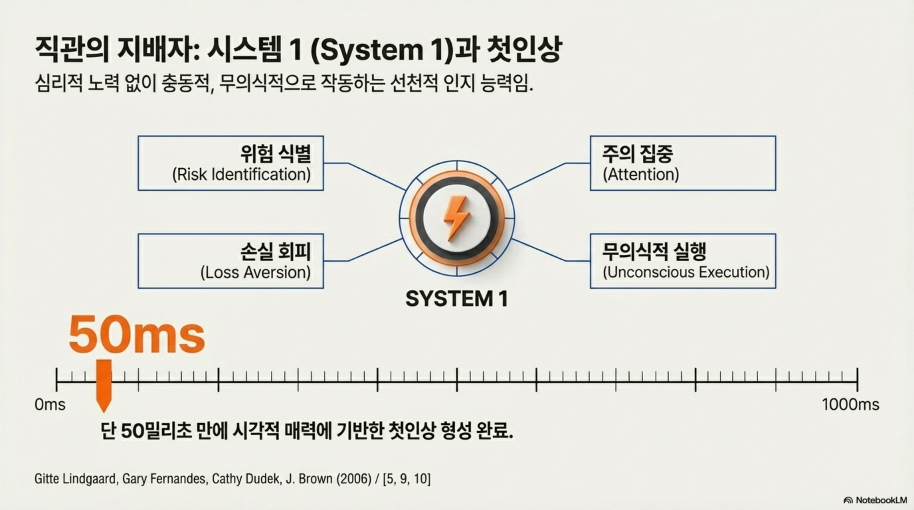
중앙: System 1의 4가지 기능 — 위험 식별, 주의 집중, 손실 회피, 무의식적 실행. 아래쪽: 0ms~1000ms 타임라인에서 50ms 지점에 주황 화살표. 1초의 20분의 1 만에 첫인상이 완성됩니다.
주황색 "50ms" 화살표를 가리키며 "여기입니다. 눈 깜빡이는 시간의 6분의 1. 이 찰나에 뇌가 이미 판단을 끝냅니다." 4가지 박스를 순서대로 짚으며 "위험한가? 봐야 하나? 손해인가? 실행!" 이 모든 게 무의식적으로 일어납니다.
그러면 System 2는 언제 깨어나나요? 항상 잠자고 있는 건가요?
"0.05초입니다. 여러분이 식당 문을 열고 한 발짝 들어서는 그 순간, 뇌의 System 1이 이미 위험 식별, 주의 집중, 손실 회피, 무의식적 실행까지 전부 끝냈어요. 메뉴판을 읽기도 전에 이미 '여기 맛있겠다'는 결론이 난 거예요."
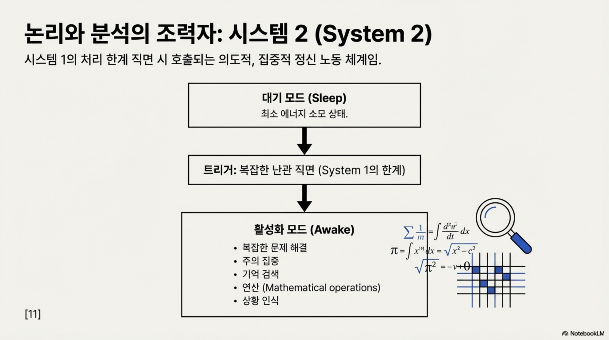
위에서 아래로 흐르는 3단계 플로우: 대기 모드(Sleep) → 트리거(System 1의 한계) → 활성화 모드(Awake). 오른쪽의 수학 공식과 돋보기 = System 2가 하는 정밀 분석 작업.
"대기 모드"를 가리키며 "평소에는 자고 있어요. 에너지를 아끼는 중." "트리거" 박스를 가리키며 "System 1이 '이건 모르겠다'할 때 깨어납니다." "활성화 모드"의 5개 항목을 짚으며 "깨어나면 이것들을 처리합니다."
System 1이 먼저 걸러내고, System 2에 넘긴다고 했는데, 이 필터링 과정은 어떻게 생겼을까요?
"식당에서 메뉴판을 읽거나 가격 계산을 할 때, 비로소 System 2가 깨어납니다. 하지만 핵심은 — 심미적 사용성 효과는 System 2가 깨어나기도 전에 System 1이 이미 결론을 내버렸다는 겁니다."
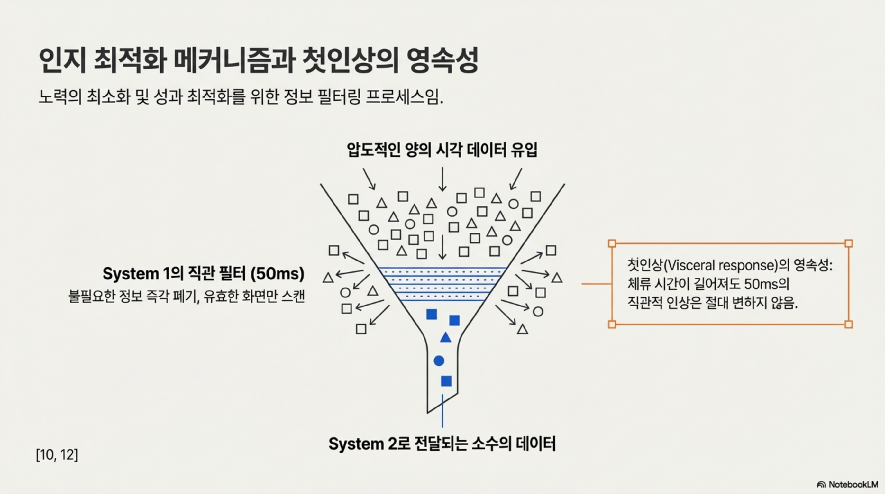
위쪽: 수많은 도형 = 압도적인 시각 데이터. 파란 점선 = System 1의 직관 필터(50ms). 아래쪽: 소수의 파란 도형만 통과 = System 2로 전달. 오른쪽 주황 박스: "첫인상은 시간이 길어져도 절대 변하지 않음."
깔때기 상단을 가리키며 "여기 정보가 쏟아집니다." 파란 필터를 가리키며 "System 1이 0.05초 만에 걸러냅니다." 하단의 소수 도형을 가리키며 "이것만 System 2가 분석해요." 주황 박스를 강조하며 "그리고 한 번 형성된 첫인상은 안 바뀝니다."
뇌의 작동 원리를 알았으니, 이걸 천재적으로 활용한 기업이 있을까요?
"식당에 들어가면 조명, 음악, 향기, 테이블 배치 등 엄청난 정보가 쏟아지죠? System 1이 0.05초에 '여기 좋다!'로 걸러버리면, 그 뒤에 메뉴가 좀 비싸도, 서비스가 좀 느려도, 첫인상이 안 바뀝니다. 이것이 첫인상의 영속성입니다."
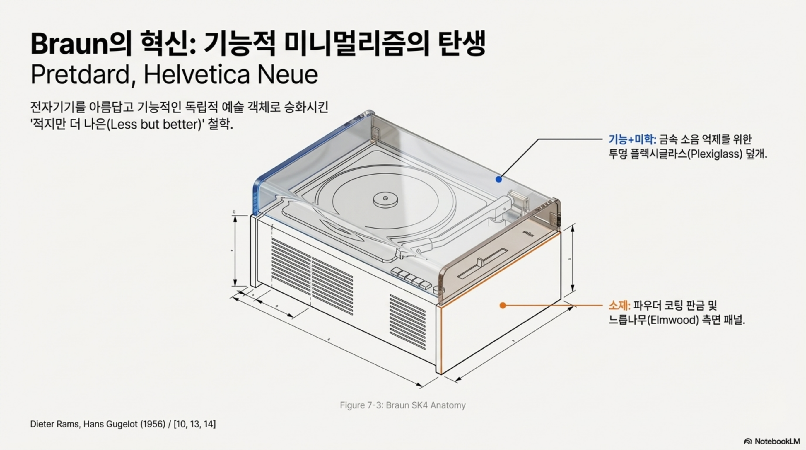
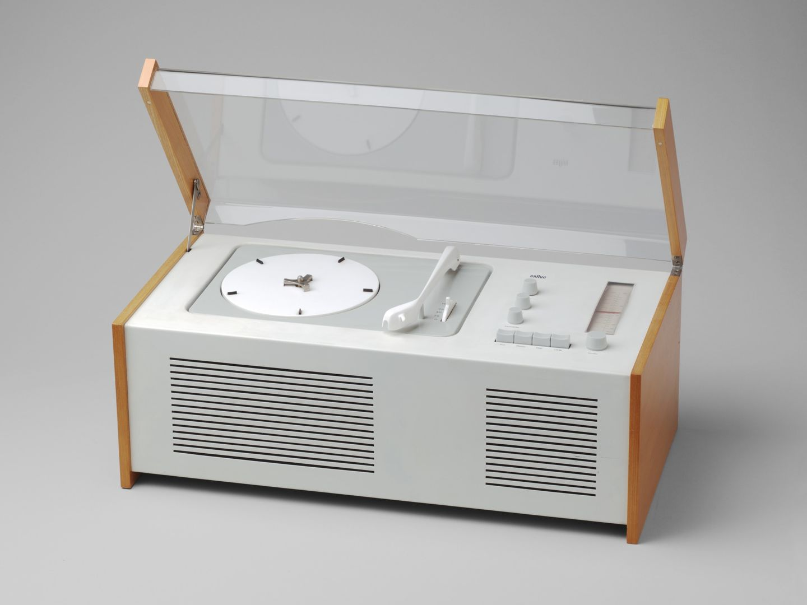
파란 점(Plexiglass 덮개)을 가리키며 "이게 혁신입니다. 소음을 줄이는 기능이자, 동시에 아름다운 디자인이에요." 주황 점(Elmwood 측면 패널)을 가리키며 "소재도 기능과 미학을 동시에 만족시킵니다."
Braun의 이 철학을 그대로 계승하고, 소프트웨어까지 확장시킨 기업이 있습니다. 어디일까요?
"Braun은 식당으로 치면 미슐랭 원조입니다. '적지만 더 나은(Less but better)' 철학으로, 투명 덮개 하나로 소음 억제와 아름다움을 동시에 해결했어요. 기능 따로, 디자인 따로가 아니라 하나로 합친 겁니다."
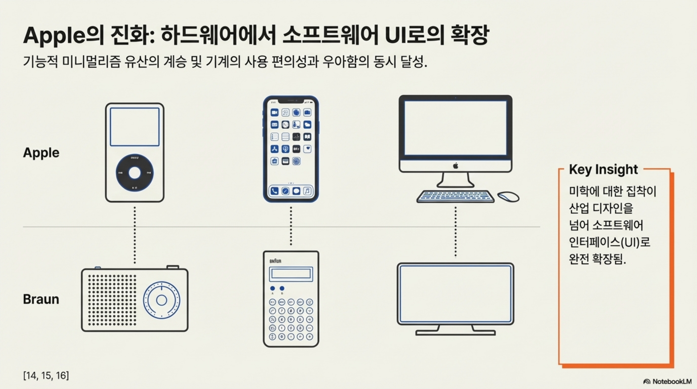
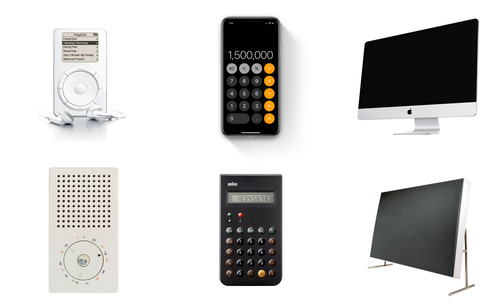
위: Apple 제품 3개(iPod, iPhone, iMac). 아래: Braun 제품 3개(라디오, 리모컨, TV). 점선 = 디자인 DNA의 계승. 오른쪽 주황 박스 Key Insight: 미학이 산업 디자인을 넘어 소프트웨어 UI로 완전 확장.
iPod과 Braun 라디오 사이의 점선을 가리키며 "같죠? 디자인 DNA가 그대로 이어집니다." iPhone과 Braun 리모컨 점선, iMac과 Braun TV 점선도 순서대로. 오른쪽 Key Insight 박스를 가리키며 결론.
Braun과 Apple은 이 효과로 어떻게 충성 고객을 만들었을까요? 후광 효과라는 개념으로 설명됩니다.
"Braun이 오프라인 미슐랭 식당이라면, Apple은 그 레시피를 배달앱 UI까지 확장한 셈입니다. iPod은 Braun 라디오를, iPhone은 Braun 리모컨을, iMac은 Braun TV를 닮았어요. 우연이 아닙니다."
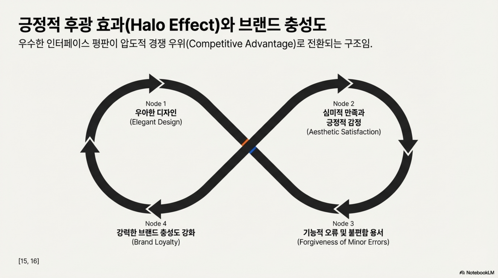
무한대(∞) 기호 형태의 4노드 루프: Node 1 우아한 디자인 → Node 2 심미적 만족 → Node 3 오류 용서 → Node 4 브랜드 충성도 → 다시 Node 1로. 한번 들어가면 빠져나오기 어려운 선순환 구조.
Node 1부터 화살표를 따라 손가락을 움직이며 "디자인이 예쁘면 → 만족하고 → 작은 문제를 봐주고 → 단골이 되고 → 그 브랜드가 더 예뻐 보이는 무한 루프입니다." 중앙 교차점을 가리키며 "이 루프가 경쟁 우위를 만듭니다."
이 효과가 이렇게 강력하다면, 연구자가 제품을 테스트할 때 함정에 빠질 수 있지 않을까요?
"애플 유저들이 매년 새 아이폰을 사는 이유가 여기 있습니다. 예쁜 디자인 → 만족 → 버그가 좀 있어도 용서 → 충성 고객 → 다음 제품도 예뻐 보임. 이 무한대 루프를 한번 타면 빠져나오기가 힘들어요."
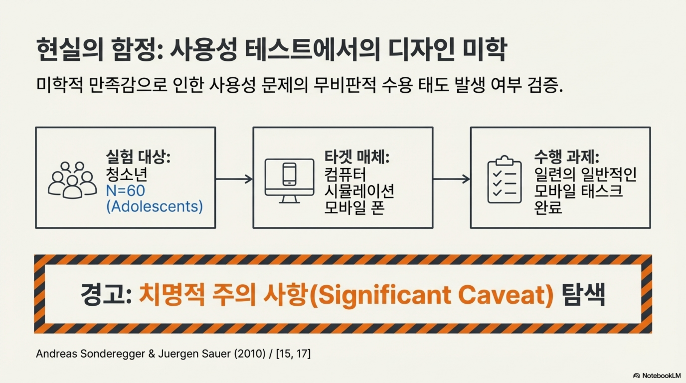
왼쪽 사람 아이콘을 가리키며 "청소년 60명." 중앙 기기를 가리키며 "컴퓨터로 모바일 폰 시뮬레이션." 오른쪽 체크리스트를 가리키며 "같은 과제를 수행." 아래 경고 박스를 가리키며 "여기 주의!"
같은 기능, 같은 과제인데 디자인만 다르게 했을 때 결과는 어땠을까요?
"이제 연구자의 시선으로 봅시다. Sonderegger와 Sauer는 60명에게 같은 기능의 폰을 줬는데, 한쪽은 예쁘게, 한쪽은 못생기게 만들었습니다. 식당으로 치면, 같은 메뉴를 고급 레스토랑과 포장마차에서 먹게 한 거예요."
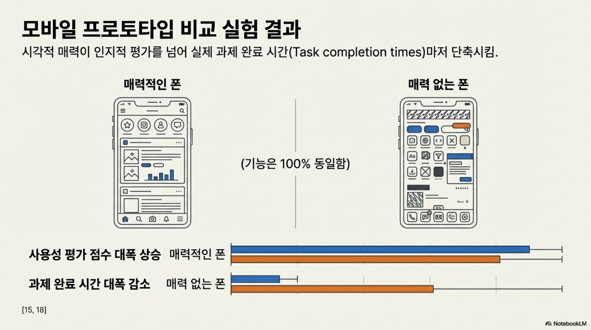
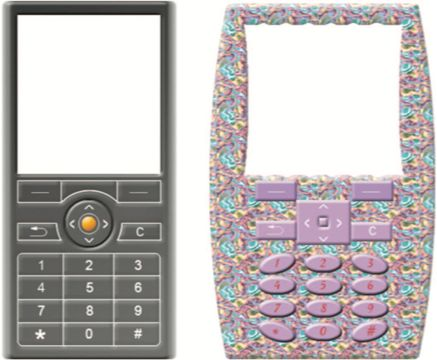
위쪽: 매력적인 폰(왼쪽) vs 매력 없는 폰(오른쪽). 기능은 100% 동일. 아래쪽 막대 그래프: 파란 막대 = 사용성 평가 점수 (매력적인 폰이 훨씬 높음). 주황 막대 = 과제 완료 시간 (매력 없는 폰이 더 오래 걸림). 핵심: 시각적 매력이 인지적 평가뿐 아니라 실제 수행 시간까지 단축시킴.
중앙 "(기능은 100% 동일함)"을 가리키며 "이게 핵심 전제입니다." 파란 막대를 가리키며 "사용성 점수: 매력적인 폰이 압도." 주황 막대를 가리키며 "놀라운 건 이겁니다. 실제 과제 완료 시간도 매력적인 폰이 더 빨라요."
예쁜 디자인이 실제 수행까지 빠르게 만든다? 그렇다면 연구자 입장에서 진짜 사용성 문제를 발견하기가 더 어려워지는 건 아닐까요?
"충격적인 결과입니다. 기능이 똑같은데, 예쁜 폰으로 하면 과제도 더 빨리 끝냅니다! 고급 식당에서 먹으면 같은 파스타도 더 빨리, 더 맛있게 먹는 셈이에요. 이게 인지적 평가만의 문제가 아니라 실제 행동까지 바꾼다는 뜻입니다."
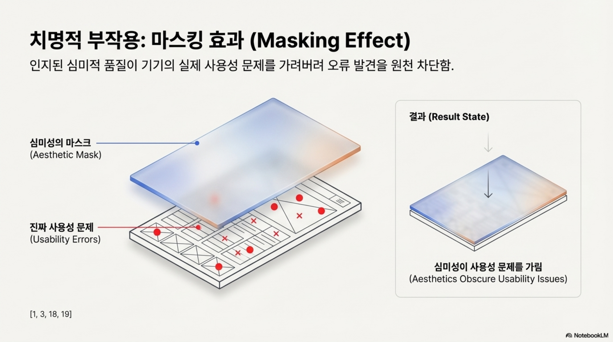
왼쪽: 아래층 = 실제 UI(빨간 점 = 사용성 오류). 위층 = 반투명 푸른 유리판(심미성 마스크). 오른쪽: 결과 상태 — 유리판이 덮이면 빨간 점(오류)이 안 보임. 핵심: Aesthetics Obscure Usability Issues.
아래층의 빨간 점들을 가리키며 "여기 진짜 사용성 문제들이 있습니다. X표시, 빨간 점." 위쪽 유리판을 가리키며 "이 반투명 유리가 심미성의 마스크입니다. 예쁜 디자인이 이걸 덮어버려요." 오른쪽 결과를 가리키며 "결과: 문제가 안 보입니다."
그렇다면 연구자는 이 마스크를 어떻게 벗길 수 있을까요?
"이것이 가장 위험한 부작용입니다. 식당 인테리어가 너무 예쁘면, 손님이 '국이 좀 짜네'라는 불만을 말하지 않아요. 예쁜 디자인이라는 유리판이 진짜 문제를 가려버리거든요. 연구자가 사용성 테스트를 할 때 이 마스크를 인식하지 못하면, 치명적인 오류를 놓칩니다."
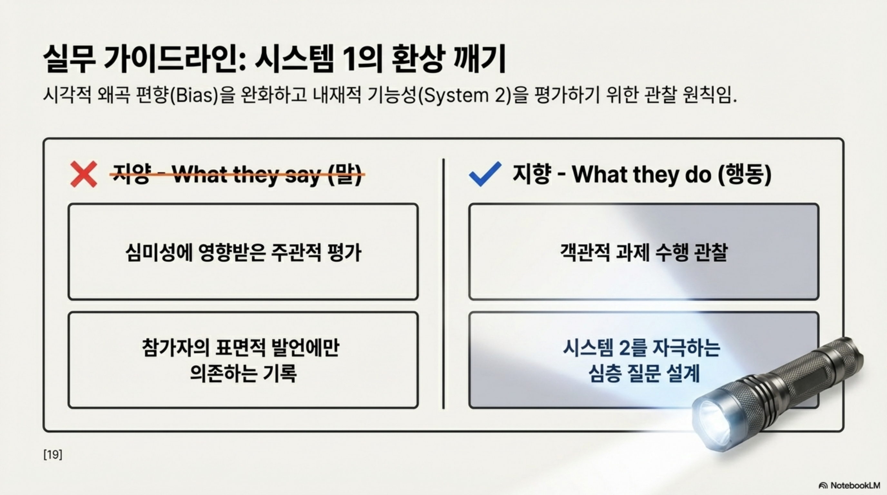
왼쪽(X): 지양 — "What they say(말)" = 심미성에 영향받은 주관적 평가, 표면적 발언에만 의존. 오른쪽(✓): 지향 — "What they do(행동)" = 객관적 과제 수행 관찰, System 2를 자극하는 심층 질문 설계. 손전등 = 마스킹을 벗기는 도구.
왼쪽 X를 가리키며 "이걸 하면 안 됩니다. 참가자가 '예뻐요, 편해요'라고 말하는 걸 그대로 믿으면." 오른쪽 ✓를 가리키며 "대신 이걸 해야 합니다. 실제로 어떻게 행동하는지 관찰하고, 시스템 2를 깨우는 질문을 던져야 해요." 손전등을 가리키며 "이게 연구자의 도구입니다."
"마지막 핵심입니다. 식당 평가단이 '맛있었어요'라고 말해도, 접시에 음식을 얼마나 남겼는지를 봐야 합니다. 말은 System 1(감정)이 하고, 행동은 진실을 보여주니까요. 연구자는 심층 질문으로 System 2를 깨워서 마스킹을 벗겨야 합니다."
사용성 테스트에서의 구체적인 행동 관찰 방법론(think-aloud, eye-tracking 등)은 교수님께서 보충해주실 겁니다.
처음에 "같은 파스타인데 왜 예쁜 식당에서 더 맛있게 느껴질까?"라고 물었습니다.
결국 좋은 연구자는 예쁜 인테리어에 속지 않고, 접시에 남은 음식을 살피는 사람입니다.
"예쁜 식당의 파스타가 맛있게 느껴지는 건 미각이 아니라 뇌의 착각이었습니다. System 1이 0.05초 만에 결론을 내리고, 그 첫인상은 절대 안 바뀌어요. 기업은 이걸 활용하고, 연구자는 이걸 경계해야 합니다. 감사합니다."